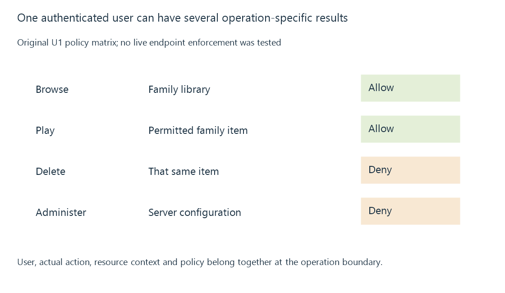

Media server authorization and operation-specific access
Media-server authorization evaluates whether an established user context may perform a specific operation on the requested resource under the applicable policy.
A user logs in successfully and can play a film, yet cannot delete it or open server administration. The credential relationship is valid; the operations have different permissions.
Authorization evaluates the action and resource under the established user context.
Ask about the particular operation
Use this original policy matrix for U1:
| Operation | Resource | Declared result |
|---|---|---|
| Browse | Family library | Allow |
| Play | A permitted family item | Allow |
| Delete | That same item | Deny |
| Administer | Server configuration | Deny |
The same authenticated account appears in every row. “Authenticated” is not one universal allow flag for all later operations.

Emby’s user, content-access and parental-control documentation identifies these separate policy areas. Actual implemented routes must enforce their relevant policy.
Keep the resource and user in the decision
An original reduced request is:
{
"authenticatedUser": "U1",
"resource": "Family/Item7",
"operation": "delete",
"canPlay": true,
"canDelete": false,
"decision": "deny"
}
The model denies deletion even though playback is allowed. Reusing only the canPlay result would select the wrong permission.
A decision also needs the resource’s actual library/folder/rating context. A client-written display label should not replace the server’s authoritative object association.
Enforce policy at the operation boundary
Filtering a list in the client improves presentation but is not sufficient authorization for a later direct resource request.
The server needs the applicable checks when the operation is attempted through its supported path. A trusted session identifies the user; it does not bypass resource policy.
Conversely, a hidden UI button is not evidence that the backend denied an attempted operation. Those are separate observations.
This is an access-control principle and teaching model, not a claim that live behavior was tested on a particular Emby version.
Several policy inputs can combine
Library/folder access, rating/tag restrictions, remote-access conditions and administrative capability can affect different operations.
A request can satisfy one condition while failing another. Library permissions and rating restrictions develop those content decisions.
The server’s storage identity also differs from the application user. The process being able to read a file does not give every authenticated user permission to request it.
An allowed request still needs a working media result
Authorization can permit playback while an absent file, incompatible output or network failure prevents presentation.
That failure does not retroactively mean the user was unauthorized. An application should preserve the difference between policy denial and unavailable/failed media processing.
See Also
- Media server authentication and credential evidence
- Library access permissions and the user’s media scope
- Rating-based restrictions and unknown metadata
- Server user identity and scoped account state